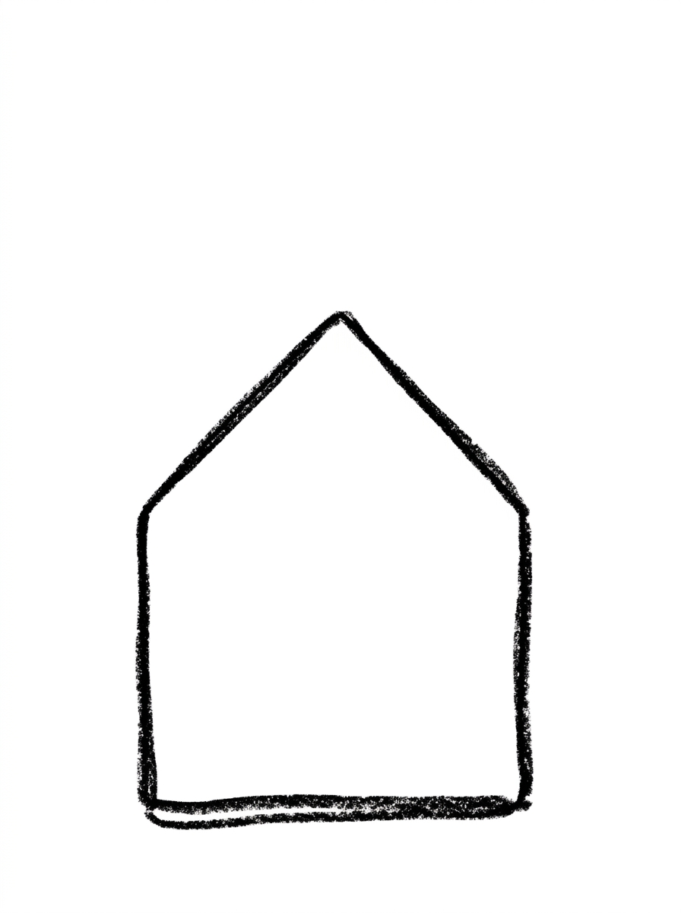
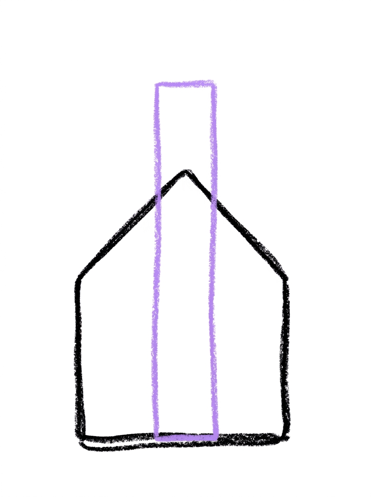
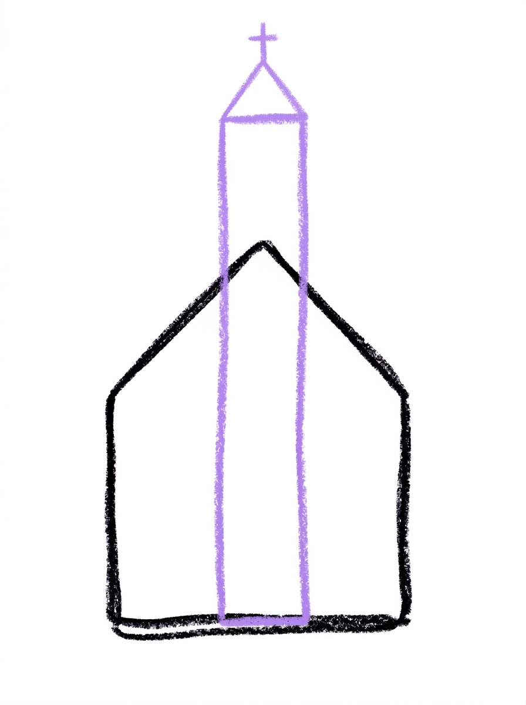
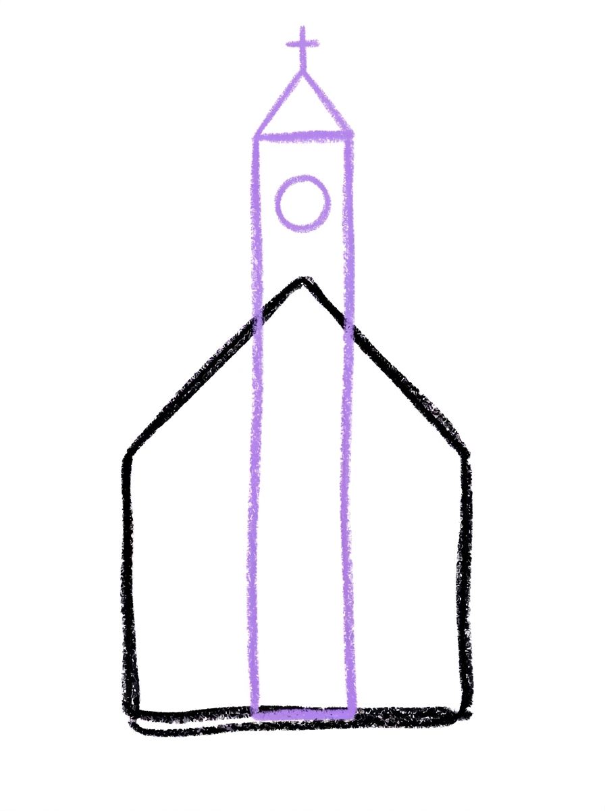
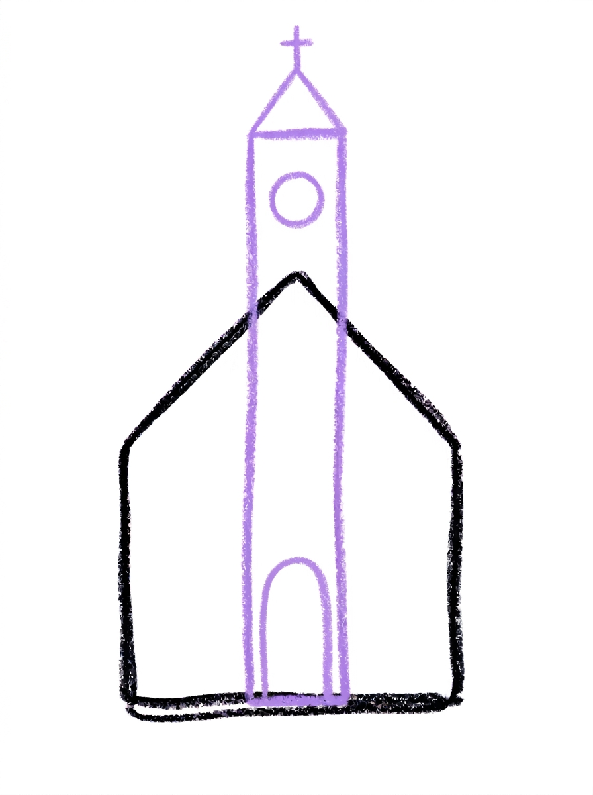
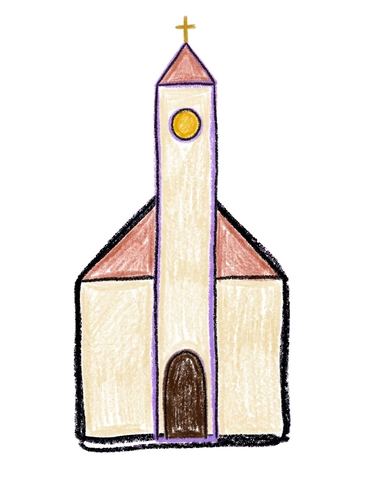

Church Drawing for Kids How to Draw A Church in 6 Easy Steps
Quick Answer
Draw a church in six easy steps: a house shape with a triangle roof, a tall tower through the middle, a cap and cross on top, a round window high in the tower, and a front door at its base. Color it warm cream. For ages 3 and up — free, no signup needed.
At a Glance
- Subject: How to draw a church
- Ages: 3+
- Steps: 6 steps
- Time: ~15 min
- Difficulty: Easy
- Supplies: Paper, crayons
A church is really just a friendly house shape with a tall tower through its middle — a square, a triangle roof, one slim tower, and a round golden window. If your child can draw a square and a triangle, they can draw this sweet little church.
✏️ Draw Your Church in 6 Easy Steps
One step per box — this step by step church drawing shows each new part in a different color so kids can see exactly what changed.
Step 1: The Building

Draw one house shape — a square with a triangle roof on top — that's the church building.
Step 2: The Tower

Draw one tall narrow rectangle in the center of the building, starting on the building's bottom edge and rising up through the roof — that's the tower, part of the building itself.
Step 3: The Cap and Cross

Add a small triangle cap on top of the tower, with a cross sitting on its point.
Step 4: The Round Window

Draw one small circle high up in the tower, above the roof.
Step 5: The Front Door

Draw a door with a rounded top at the bottom of the tower.
Step 6: Color It In

Color the church warm cream, the roof and tower cap soft red-brown, the door dark brown, the round window golden yellow, and the cross gold. Great drawing!
📊 Church Drawing by Age
Every age can join in — just adjust the job.
| Age | What they can do | Tip |
|---|---|---|
| 3-4 | Draw the house-shaped building and color the finished church warm cream with a golden window. | Start the building low and wide on the page — the tower needs a lot of room to rise through the roof above it. |
| 4-5 | Add the tall center tower with its triangle cap and cross, and the round window high in the tower. | The tower starts at the building's bottom edge, not on the roof — drawing it from the ground up is the trick that makes it look properly built in. |
| 6+ | Finish all six steps, including placing the round-topped door at the tower's base so the window and door line up. | Older kids can check their own alignment: window above, door below, both in the middle of the tower. |
🖨️ Download Your Free Church Drawing Printable
The printable lays out all 6 steps one per box, big enough for little hands — kids draw right alongside each step.
⬇️ Open Free Printable 🖨️ Print🎁 Free printable for ages 3+
⛪ Church Story Page
Give your church a setting: draw a path leading to the front door, a couple of simple trees on each side, and a sun or a row of clouds in the sky, then decide together what is happening at this church today — a wedding with flowers along the path, a quiet snowy morning, or a celebration with flags flying from the tower. Write one sentence about the day under the drawing (or dictate it for a grown-up to write) and the picture becomes a story your child can keep telling.
What You'll Need to Draw A Church
All you need is a pencil, an eraser, and crayons or markers. For the colors in the tutorial, have warm cream ready for the building and tower, soft red-brown for the roof and tower cap, dark brown for the door, golden yellow for the round window, and gold for the cross. Regular printer paper or a sketchbook both work.
What They're Learning
This tutorial practices squares with a triangle roof (the building), tall narrow rectangles (the tower), small triangles (the cap), and a circle placed high on a structure (the round window) — great vertical-building practice. Kids also work on center alignment, keeping the tower, window, and door in one column, and sequencing from the biggest shape to the smallest detail.
Make It Yours
Try a snowy church with a white roof and falling snow dots, a celebration church with flowers along the path and a heart in the round window, a night church with a dark sky and the round window glowing, or a tiny village by adding two simple house shapes beside it. A gold cross and a sunrise behind the tower make a beautiful holiday card.
🛒 Our Favorite Drawing Supplies
These are the supplies we reach for in our own home — washable (because kids), quality paper, and enough colors to avoid fights.
As an Amazon Associate, MomYouNeedThis earns from qualifying purchases — at no extra cost to you.
💡 Church Drawing Tips for Parents
Step 2 is the heart of the whole tutorial: the tower must start on the building's bottom edge and rise through the roof, in the center. If your child starts the tower on top of the roof instead, it will look perched and tippy — gently restart that one rectangle from the ground line and the difference is instant and very satisfying for them to see.
Keep the round window in step 4 high in the tower, well above the roof, and the door in step 5 at the tower's very bottom. Kids tend to drift the window downward until it bumps into the door; pointing out the big empty stretch of tower between them in the picture first prevents the squeeze.
⛪ Churches in the Real World
A church is a building where people gather to pray, sing, and celebrate together. Many churches have a tall tower or steeple, sometimes holding bells that ring out over the town — long before phones, those bells told everyone the time and called them together. The steeple's height is why you can spot a church from far away.
Many churches also have windows made of stained glass: pieces of colored glass joined into pictures that glow when the sun shines through them. That round window in the drawing is a small cousin of those glowing windows. Ask your child what colors theirs would glow with.
✋ Warm-Up: Tall Towers and Triangle Roofs
Warm up with the church's building blocks. Draw a row of tall, skinny rectangles — towers of different heights, like a skyline of candles. Then give each one a triangle roof. Houses, towers, castles: the same two shapes build them all, and a page of quick ones makes the real drawing's shapes feel easy.
A roof that lands a little crooked is the most forgiven mistake in drawing — old churches lean charmingly in real life. The fix that is worth the eraser is a floating shape: if a roof or tower hovers, extend its lines down until it stands on something. Buildings must land.
📖 Give Your Church a Story
A church is busiest on celebration days. Churches fill up on celebration days, and the drawing gets to pick which one. Is there a baby being welcomed, a choir mid-song, or neighbors sharing a big meal after the service? Have your child dictate a sentence or two for under the drawing; a church with something happening inside it becomes a place, not just a building.
The city tutorial is the church's natural neighbor: every church stands in a town of some size. Drawing the city next lets your child place their church among the tall buildings — the same view people have had from church steps for centuries. The church stands tallest with a how to draw a city around it, and an how to draw an angel for the steeple.
❓ Church Drawing FAQs
What is the easiest way to draw a church?
Start with one house shape — a square with a triangle roof — then build the tall tower right through its center: a narrow rectangle from the building's bottom edge up through the roof, a triangle cap and cross on top, a round window high in the tower, and a door at its base. The six steps stack familiar shapes into a proper little church.
What age is this church drawing for?
It's made for ages 3 and up. The shapes are all preschool-friendly — squares, triangles, rectangles, and one circle — and younger kids can do the building and coloring while older kids line up the tower, window, and door themselves.
What supplies do we need?
A pencil, an eraser, paper, and crayons or markers. For colors you'll want warm cream for the building and tower, soft red-brown for the roof and tower cap, dark brown for the door, golden yellow for the round window, and gold for the cross.
Is the printable really free?
Yes — every printable on MomYouNeedThis is 100% free, including this church drawing tutorial. There is no signup, no email, and no catch — just download, print, and draw.
How do I print it?
Open the PDF and choose Print, then set the scale to 100% (sometimes called Actual Size) so the steps print at full size. The tutorial is designed for regular US Letter paper, and plain printer paper works perfectly.
Where does the tower go?
Right through the center front of the building. The tower is one tall narrow rectangle that starts on the building's bottom edge and rises up through the roof — it's part of the building itself, not a separate piece stuck on the side, and that built-in look is what makes it read as a church tower.
Where does the round window go?
High up in the tower, above the roof line, and it's one small circle colored golden yellow. The door sits far below it at the tower's base, so the window and door never crowd each other — keep that gap when you draw.
Where does the front door go?
The door stands at the bottom of the tower, in the center of the building, with a rounded top. Placing the door in the tower's base — under the round window — lines the whole front of the church up in one tidy column.
📚 Keep Exploring
- ✏️ All 76 Drawing Tutorials 76 free step-by-step drawing tutorials for kids.
- 🎀 Cute Coloring Free cute coloring pages for kids.
- ✏️ Drawing Practice Free printable drawing pre-writing worksheet for toddlers.